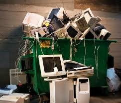
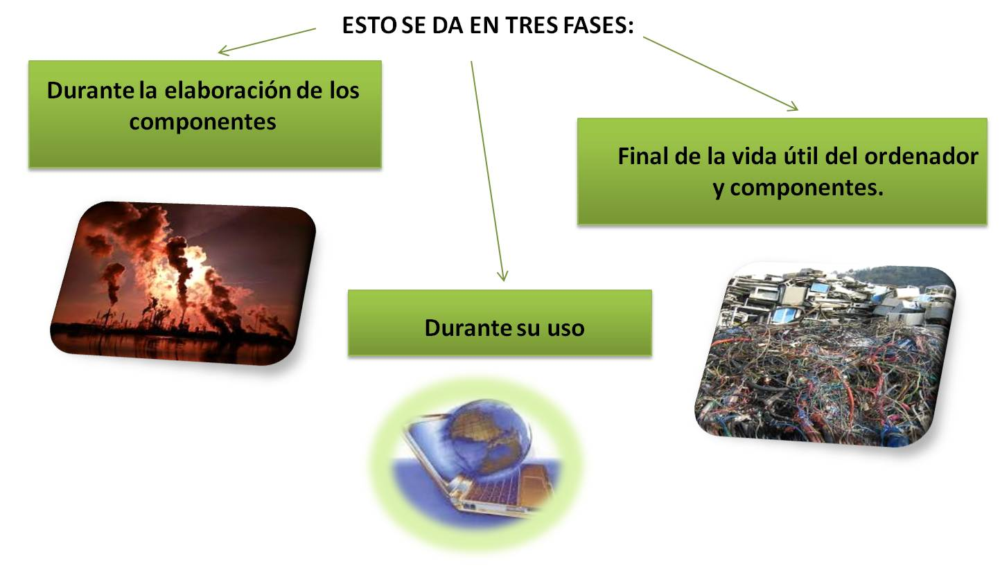
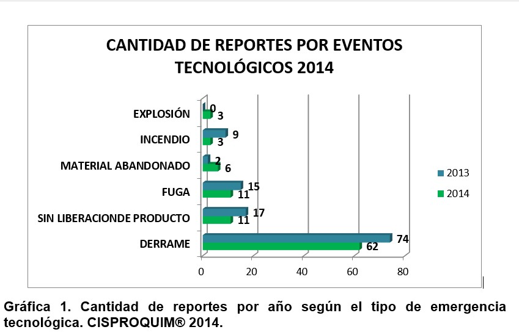
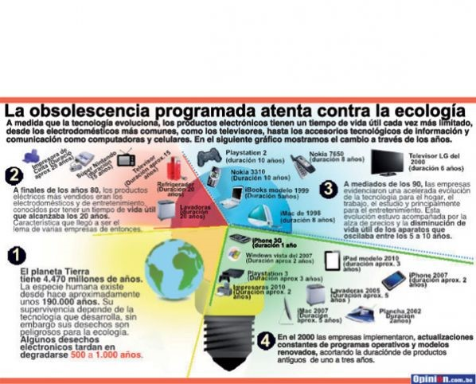

Reciclado de equipo de computo
•¿Qué partes de un equipo de cómputo contienen plástico?

Cualquier equipo de cómputo cuenta con plástico como es:
*El chasis o gabinete: es una estructura metálica, encargada de contener y proteger, todos los componentes de hardware del personal computar, como es la fuente de alimentación, el disco duro, la placa madre y la grabadora de DVD entre otros.
*Teclado: es un dispositivo o periférico de entrada, en parte inspirado en el teclado de las máquinas de escribir, que utiliza una disposición de botones o teclas, para que actúen como palancas mecánicas o interruptores electrónicos que envían información a la computadora.
*Mouse: es un dispositivo apuntador utilizado para facilitar el manejo de un entorno gráfico en una computadora.
*Cableado: se usa en redes de computadoras o sistemas informáticos o electrónicos para conectar un dispositivo electrónico con otro.
De las cuales al pasar el tiempo todas las computadoras son rentadas por un contrato de 3 a 4 años y al pasar este tiempo son reemplazadas.
Son máquinas que cuentan con un Procesador Intel Core i5, 8 GB de memoria RAM, sistema operativo x64 bits, 2 discos duros (1 de 100 GB y otro de 365 GB).Son desechados con base para laptop, mouse y teclado.
Con estos equipos se desecha un 50% y un 70% de plástico (todo depende del estado del equipo de cómputo). Son reciclados en refacciones para otros equipos que requieran reparación (refacciones). Y los que no son reutilizados Se ofrecen a los empleados (por un precio bastante económico) y los que no son vendidos, se los lleva el proveedor para posteriormente ser almacenados en bodegas, aunque se desconoce el que hagan con ellos a partir de ese punto.
•SEGUIDO DE LAS PREGUNTAS HECHAS DE INVESTIGACIÓN.
Las preguntas fueron contestadas por el jefe del Departamento de Sub administración de Apoyo Desconcentrada de Comunicaciones y Tecnologías de la Información de Querétaro 1. Con un complemento por la proveedora de Computadoras MAINBIT Querétaro, junto con un empleado del Departamento donde nos bridaron información para nuestro trabajo.
Domicilio: Av. Ignacio Allende Sur #8 Col. Centro, Querétaro, Qro.
1. ¿Cuántas computadoras se desechan al año, por familias, en empresas, escuelas, dependencias gubernamentales, etc.?
Ninguna, todas las computadoras son rentadas por un contrato de 3 a 4 años. Son reemplazadas pasando este tiempo o se les puede dar mantenimiento u otra utilidad para que las computadoras tengan un uso en ese tiempo lo cual se les puede dar limpieza o pueden utilizarlas como repuestos para no ser remplazadas.
2. ¿Qué características de hardware tienen esas computadoras (procesador, memoria, disco duro) y con qué periféricos son desechados?
Procesador Intel Core i5, 8 GB de memoria RAM, sistema operativo x64 bits, 2 discos duros (1 de 100 GB y otro de 365 GB).
Son desechados porque son las cosas que más se descomponen ya que todas sus partes pueden ser delicadas y si no le damos mantenimiento hace que la base para laptop, mouse y teclado se descompongan y sean desechados.
3. ¿Qué porcentaje del plástico desechado por equipos de cómputo, son reciclados y en qué?
Entre un 50% y un 70% (todo depende del estado del equipo de cómputo). Son reciclados en refacciones para otros equipos que requieran reparación (refacciones).
4. ¿Los equipos de cómputo que no son reutilizados a dónde van dar?
Se ofrecen a los empleados (por un precio bastante económico) y los que no son vendidos, se los lleva el proveedor para posteriormente ser almacenados en bodegas, aunque se desconoce el que hagan con ellos a partir de ese punto ya que tenemos entendido se pueden utilizar cosas para otros equipos que puedan fallar puedan tomar piezas para arreglar las Pc y tomar refacciones y darles una nueva utilidad y no ser tirados y las cosas que ya no puedan servir son tiradas a un lugar específico donde se desconoce
5. ¿Qué partes de un equipo de cómputo contienen plástico?
El chasis, teclado, mouse, gabinete y cableado.
Las preguntas fueron contestadas por:
Jefe del Departamento – Netzahualcóyotl Vera Tapia.
Proveedora MAINBIT – María José González.
Empleado del Departamento – Pablo Olvera
•Gráficas y estadísticas del impacto de contaminación ambiental que generan

•Materiales contaminantes más resaltantes de una computadora.
PLOMO:
• Es la materia prima en la construcción de monitores, puede causar el deterioro intelectual en los niños, dañar el sistema nervioso, sanguíneo y reproductivo en adultos.
CADMIO:
• Es otro material o componente utilizado en las baterías recargables de las computadoras para conexiones de los viejos monitores, también afectan al organismo del hombre como el riñón y huesos.
MERCURIO:
•Se utiliza en las pantalla plana puede dañar el cerebro y el sistema nervioso central sobre todo durante el desarrollo temprano. Compuestos de cromo hexavalente son utilizados en la producción de cubiertas de metal y son altamente tóxicos y cancerígenos para los humanos. Es decir que este material es dañino en estado primario o en su elaboración y uso para tal efecto.
•En concentraciones ambientales constantes, las concentraciones de mercurio en peces de determinada especie tienden a aumentar con la edad, como consecuencia de la lenta eliminación del metilmercurio y una mayor ingesta debido a los desplazamientos en los niveles tróficos que suele haber a medida que el pez va creciendo.
PVC:
•Es un plástico que contiene cloro y se utiliza para el aislar cables y alambres. Dioxinas y furanos son emitidos cuando se fabrica el PVC o cuando se desecha y se incinera. Estos químicos son altamente persistentes en el ambiente y son tóxicos incluso en muy bajas concentraciones.
•La fabricación de PVC (poli-vinilo de cloro) crea dioxinas y furanos que puede causar cáncer. También la fabricación usa mucho mercurio, que daña el sistema nervioso y los riñones, al contener cloro en su estructura molecular genera lluvia acida. El cromo y las partes cromadas pueden dañar ADN. La cubertura plástica contiene bromuro de combustión lenta que causa defectos de nacimiento y problemas de crecimiento en niños.
COBRE:
•Utilizado por ser un excelente conductor de electricidad y calor para las tarjetas, chip. Un ordenador contiene 1.5 kilos de cobre, si tenemos en cuenta que 240 millones de ordenadores son vendidos en todo el mundo cada año, reciclando estos ordenadores se recuperaría el equivalente a la producción de una mina durante un año, alrededor de 360.000 toneladas de cobre.
TUBOS CATÓDICOS:
•La implosión o en todo caso la rotura del vidrio causa la dispersión de estos materiales
Por otro lado, los aparatos tecnológicos ocasionan gran cantidad de desastres en la naturaleza, como son: explosiones, incendios, fuga, etc.
A continuación, se muestra una gráfica en la que se valoraron los eventos tecnológicos ocurridos en el año 2004, los cuales fueron causados por materiales químicos que dañan a la tierra en su defecto:

Finalmente un artículo que nos presenta el mal uso que le damos a la tecnología y sus consecuencias:
